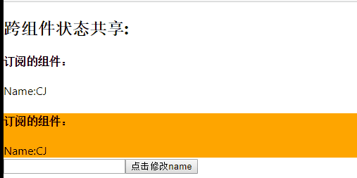

# 管理思想
在组件化开发模式中，组件数据共享一直也是复杂应用项目的痛点，基于单向数据流的思想，组件传值变得麻烦，除去父子组件或孙子组件之外，平行组件又或者跨越层级较多的组件之间的通信变的异常繁琐，vue不是很熟悉，应该类似也有API来处理跨多层组件之间的数据共享问题，react下contextAPI可实现跨越多层组件之间的数据共享，但极大的破坏了组件的规范性，使得此类组件很难再进行任何复用，虽然redux增加了项目的复杂度，redux官方也不是很推荐在一些项目中使用react-redux，明确说明-当你还在思考你的项目要不要使用react-redux时，那说明你的项目是不需要使用的，他规定了每个修改数据的动作都要有一个action属性，然后根据action属性进行不同的操作，最终返回一个数据结果，所有有绑定的组件根据最新的状态进行更新。
# 发布订阅
发布订阅模式在任何框架中应用的地方很多，经典的开发思想，MVVM中用来存储更新DOM的操作，数据变更通知所有订阅者更新数据，redux中也不例外，存储有订阅的组件更新视图函数，数据变更时通知所有订阅的组件进行重新渲染(执行render函数)，通过一个第三方容器来跨组件管理状态。
# redux
基于所有组件化框架的单向数据流的思想，redux规定我们每次更改数据时都应该有一个action来描述修改数据状态的原因或者动机，从而修改store中的数据，再通知每个订阅者或者组件进行更新视图。

应用中所有的 state 都以一个对象树的形式储存在一个单一的 store 中。 惟一改变 state 的办法是触发 action，一个描述发生什么的对象。 为了描述 action 如何改变 state 树，你需要编写 reducers。
# redux示例
抄一波官方文档的代码：
import { createStore } from 'redux';
/**
* 这是一个 reducer，形式为 (state, action) => state 的纯函数。
* 描述了 action 如何把 state 转变成下一个 state。
*
* state 的形式取决于你，可以是基本类型、数组、对象、
* 甚至是 Immutable.js 生成的数据结构。惟一的要点是
* 当 state 变化时需要返回全新的对象，而不是修改传入的参数。
*
* 下面例子使用 `switch` 语句和字符串来做判断，但你可以写帮助类(helper)
* 根据不同的约定（如方法映射）来判断，只要适用你的项目即可。
*/
function counter(state = 0, action) {
switch (action.type) {
case 'INCREMENT':
return state + 1;
case 'DECREMENT':
return state - 1;
default:
return state;
}
}
// 创建 Redux store 来存放应用的状态。
// API 是 { subscribe, dispatch, getState }。
let store = createStore(counter);
// 可以手动订阅更新，也可以事件绑定到视图层。
store.subscribe(() =>
console.log(store.getState())
);
// 改变内部 state 惟一方法是 dispatch 一个 action。
// action 可以被序列化，用日记记录和储存下来，后期还可以以回放的方式执行
store.dispatch({ type: 'INCREMENT' });
// 1
store.dispatch({ type: 'INCREMENT' });
// 2
store.dispatch({ type: 'DECREMENT' });
// 1
react-redux动态更新就是store被dispatch后调用指定的组件进行状态刷新，实现多个组件之间共享状态。
# 简易实现简易的React-Redux
# 效果预览

本章节并不实现react-redux的所有功能，主要是讲解react-redux的设计思想的大概的实现方法。
- forceUpdate:在组件内使用this.forceUpdate()来主动触发视图层更新，组件render完后向发布订阅模式订阅一个更新该组件的函数，修改公共状态时通知订阅者更新视图。
# 文件目录
react-redux
index.js --简易的发布订阅模式
APP.js --create-react-app入口文件
Child.js --订阅者
# index.js
经典发布订阅模式
let state={
name:"CJ"
},arr=[];
let getState=function () {//获取最新的数据
return state;
}
let subscribe=function (fn) {//添加订阅者
arr.push(fn);
}
let updateState=function (callback) {
let newState=callback(state);//执行并传递state参数到callBack函数中
state={...state,...newState};//保留原有参数，仅替换新的状态已有的数据
arr.forEach((item)=>item());//通知订阅者执行
}
export {//导出接口
getState,
subscribe,
updateState
};
# APP.js
添加订阅者函数
import React from 'react';
import {getState,
subscribe,
updateState} from "./react-redux";
import Child from "./Child";
class App extends React.Component{
componentDidMount(){//渲染完成后添加更新的订阅者
subscribe(()=>{this.forceUpdate()});
}
render(){//渲染函数，数据修改时会自动触发视图更新
let {name}=getState();//容器内的state数据
return(
<div>
<h2>跨组件状态共享:</h2>
<h4>订阅的组件：</h4>
Name:{name}
<TestRedux/>
</div>
)
}
}
function TestRedux() {//修改参数
return(
<div>
<Child/>
<input type="text" id='test'/>
<button onClick={()=>{
updateState(state=>{//调用update返回一个最新的状态
return {name:window.test.value}
})
}}>点击修改name</button>
</div>
)
}
export default App;
# Child.js
与容器共享状态
import React from 'react';
import {getState,
subscribe,
updateState} from "./../redux";
class Child extends React.Component {
componentDidMount(){//渲染完成后添加更新的订阅者
subscribe(()=>{this.forceUpdate()});
}
render() {
let {name}=getState();//容器内的state数据
console.log(this.props)
return ( <div style={{background:'orange'}}>
<h4>订阅的组件：</h4>
Name:{name}
</div> );
}
}
export default Child;
# 更好用的MobX
相比react-redux，mobx简洁的语法和神奇的响应式原理,相比react-redux而言项目复杂度降低了许多，在一个大型的react项目中，往往全局状态会有很多，开发者为了尽量减少手动输入字符串标识等，会把一个项目包含react-redux功能的文件拆分为reducer，action-type，action等,使用combineReducers合并成一个reducer，将每个store进行拆分为多个文件分开管理，这种开发方式并不适合一些中小型应用，繁琐复杂的定义和文件引用跳转等，直到后来使用了mobx，一个文件就对应一个state，即全局状态，action使用方法名称来定义，通过对象来调用和派发，即避免了定义常量字符串，也方便开发者使用编辑器的提示调用方法。
# MobX用法
- 使用前请安装mobx
Timer.js
import {observable,action,autorun} from 'mobx';
//observable:创建一个需要被监听的对象
// action:定义触发数据改变函数
// autorrun 数据更改时所执行的函数
var appState = observable({//创建状态
timer: 0
});
appState.increment=action(function reset(){//挂载action函数
appState.timer++
})
setInterval(action(function tick() {
appState.timer += 1;
}), 1000);
autorun(function(){// 数据更改是自动执行的函数
console.log(appState.timer);
})
export default appState;
每次数据修改就会自动运行autorun内的函数并获取到最新的状态值。
# React-MobX
Mobx配合React,像是react-redux一样的，在数据更改时调用autorun方法去触发组件重新渲染。官方使用装饰器模式去包装React组件，被包装的组件在数据修改时可重新渲染最新的视图层数据,也可以使用observer对组件进行包装，效果一样。
import React from 'react';
import Store from './mobx/Timer'// 导入上述的Timer.js文件
import {observer} from 'mobx-react';
class App extends React.Component {
constructor(props) {
super(props);
this.state = { };
}
render() {
return (
<div className="App">
{Store.timer}
<button onClick={()=>{
Store.increment()
}}>Increment</button>
</div>
);
}
}
export default observer(App);//渲染包装后的组件
mobx中state数据改变后在React组件中就能及时动态渲染最新状态了。
# 动手实现MobX
MobX基于ES6新增API－Proxy实现，用来对数据添加中间层代理，弥补了基于Object.definePrototype的缺陷。
- observable：返回被proxy代理的对象，每次触发set时调用autorun内的函数执行
- observer：包装react组件，触发set时调用autorun执行组件更新。
- autorun：数据改变时执行的函数。
# 文件目录
mobx
action.js action函数触发事件执行改变状态
autorun.js 数据改变时执行的函数
mobx-react.js 增加组件刷新功能
observable.js 数据增加代理
# mobx-react.js
import autorun from "./autorun";
export default function observer(Component) {//包装的组件增加autorun自动刷新
autorun( ()=> {
Component.prototype.componentWillMount =function () {//组件加载完成调用原型方法自动重新渲染
autorun(() => {
this.forceUpdate();
});
}
});
return Component
}
# observable.js
import autorun from "./autorun";
export default class observable{
constructor(target){
return new Proxy(target,{//返回代理后的proxy对象
get(target,key,val){
return target[key]
},
set(target,key,val){
if(target[key]!==val){
target[key]=val;//数据更改促发autorun函数执行
autorun(autorun.target)
return val
};
}
})
}
}
# autorun.js
export default function autorun(fn) {
if(fn){
autorun.target=fn;//函数赋值给target对象，proxy内可以取到
fn();
}
}
使用react-app渲染
import React from 'react';
import {observer,observable} from "./mobx";
//导入包装组件和代理
class App extends React.Component {
render() {
return(
<div>
<h2>{store.name}</h2>
<SubApp/>
<input onChange={(event)=>{state.name=event.target.value}}/>
</div>
)
}
}
class SubApp extends React.Component {
render() {
return(
<div>
<h2>{store.name}</h2>
</div>
)
}
}
export default observer(App);
//input的onchage事件改变state的数据，通知组件重新渲染。
自此，一个基本的mobx-react的功能就完成了，mobx的大致运行原理也更深入了一层。
# redux-saga
# 简介
最近看一些招聘要求上React全家桶又多了一个，起初好奇的去看了看，主要还是处理我们常见的异步全局状态，功能类似redux-thank,个人感觉前端很多代码和书写方式都没有说有一种特定的要求，使用react-redux或者mobx在异步数据获取后进行dispatch也是一种异步处理，如果非要说saga的好处的话，就是使用了Generator 函数的功能，相比之后的async/await，Generator似乎对异步的管控会更自由，异步代码调用也越来越像同步代码了。代码地址
# 开始
redux-saga也是基于redux的，所以基本的代码几乎都是一样的,下面时一个简单的计数器使用saga去控制状态。
reducer.js
export default function counter(state = 0, action) {//传递当前的状态值/
//以及action的信息{至少拥有一个type属性说明本次更新的类型}
switch (action.type) {
case 'INCREMENT':
return state + 1;
case 'INCREMENT_IF_ODD':
return (state % 2 !== 0) ? state + 1 : state
case 'DECREMENT':
return state - 1
default:
return state
}
}
Counter.js
import React, { Component, PropTypes } from 'react'
//计时器组件，接收value，同步增加减少，异步增加减少的dispatch函数
const Counter = ({ value, onIncrement, onDecrement, onIncrementAsync,onDecrementAsync }) =>
<div>
<button onClick={onDecrementAsync}>
Decrement after 1 second
</button>
{' '}
<button onClick={onIncrementAsync}>
Increment after 1 second
</button>
{' '}
<button onClick={onIncrement}>
Increment
</button>
{' '}
<button onClick={onDecrement}>
Decrement
</button>
<hr />
<div>
Clicked: {value} times
</div>
</div>
Counter.propTypes = {
value: PropTypes.number.isRequired,
onIncrement: PropTypes.func.isRequired,
onDecrement: PropTypes.func.isRequired,
}
export default Counter
sagas.js
import { delay } from 'redux-saga'
import { put, takeEvery, all } from 'redux-saga/effects'
function* incrementAsync() {
yield new Promise((reslove)=>{
setTimeout(()=>{
reslove('success!!!')
},2000)
})
yield put({ type: 'INCREMENT',res:'test' })
}
function* decrementAsync(){
yield new Promise((reslove)=>{
setTimeout(reslove,1000);
})
yield put({type:'DECREMENT',msg:'DECREMENT'})
//执行store.dispatch({type:'DECREMENT',msg:'DECREMENT'})
}
// watcher Saga: 在每个 INCREMENT_ASYNC action 派生一个新的 incrementAsync 任务
function* watchIncrementAsync() {
yield takeEvery('INCREMENT_ASYNC', incrementAsync);
}
function* watchDecrementAsyc(){
yield takeEvery('DECREMENT_ASYNC',decrementAsync)
}
// notice how we now only export the rootSaga
// single entry point to start all Sagas at once
export default function* rootSaga() {
yield all([
decrementAsync(),
incrementAsync(),
watchIncrementAsync(),
watchDecrementAsyc(),
])
}
main.js(入口文件)
import React from 'react'
import ReactDOM from 'react-dom'
import { createStore, applyMiddleware } from 'redux'
import createSagaMiddleware from 'redux-saga'
import Counter from './Counter';
import reducer from './reducers';
import rootSaga from './sagas';
const sagaMiddleware = createSagaMiddleware();
//创建saga中间件
const store = createStore(
reducer,
applyMiddleware(sagaMiddleware)//使用redux使用中间件
)
sagaMiddleware.run(rootSaga);//启动异步saga
const action = type => store.dispatch({type})//派发行为
function render() {
ReactDOM.render(
<Counter //传递同步异步行为
value={store.getState()}
onIncrement={() => action('INCREMENT')}
onDecrement={() => action('DECREMENT')}
onIncrementAsync={() => action('INCREMENT_ASYNC')}
onDecrementAsync={() => action('DECREMENT_ASYNC')} />,
document.getElementById('root')
)
}
render()
store.subscribe(render)//绑定视图层，数据变更做出对应的响应（刷新视图）
实现效果就是四个按钮，每个按钮点击绑定各自的同步异步事件，各自按照各自的时间触发实现。个人理解还是较浅。
# 动手实现saga
还早还早，Generator 底层原理还没开始接触，先去看看再回来试试。